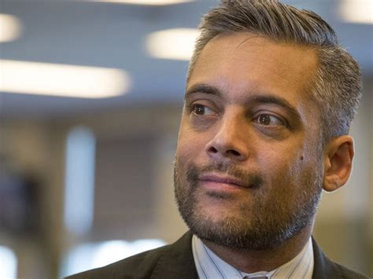

Liberal Leader David Khan Resigns
November 23rd, 2020
Alberta Liberal Party Official Website:
TDC_ARTICLE_START
Calgary, Alberta — November 22nd, 2020: The Alberta Liberal Party announces the resignation of Leader David Khan.
Alberta Liberal Leader David Khan is stepping down to accept a new employment opportunity in law. The party thanks him for his service as Leader since 2017. Khan developed bold new policies, modernized party operations and recruited a new generation of young Albertans to the Alberta Liberal Party.
Khan stated, “During my time as Alberta Liberal Leader, we were powerful advocates on significant issues including regulating Political Action Committees, remediating orphan wells, eliminating school segregation rooms, and addressing the “red alerts” crisis in EMS. We pushed the provincial government to take action on these matters of concern to Albertans. We also raised awareness and grew support for Universal Basic Income, and the necessity of a sales tax. I was proud to advance these forward-thinking ideas to improve the lives of Albertans.
“It has been an honour to serve Albertans and the Alberta Liberal Party.”
The Alberta Liberal Party Board of Directors will meet shortly to decide the next steps for the Party.
TDC_ARTICLE_STOP
David Khan
So, David Khan, the openly gay brown Leader of the Alberta Liberal Party has stepped down to do run of the mill parasatism in a law firm. For those who aren't familiar with Alberta Politics, the Liberal Party used to be a fairly significant force, winning 32 of 87 seats, and becoming the Official Opposition. Since then they have been dwindling in support every election. They fell to third largest party in 2012, and elected a grand total of one member in 2015. In the 2019 election, they elected nobody, and got 0.98% of the vote. For reference, while they're not our goys either, the Alberta Party, which you have possibly never heard of, got 10% of the vote, unfortunately losing their three seats and now also having nobody in office.
CBC:
TDC_ARTICLE_START
The party thanked Khan, noting in the release he "developed bold new policies, modernized party operations and recruited a new generation of young Albertans to the Alberta Liberal Party."
TDC_ARTICLE_STOP
 Well I guess that generation of young Albertans didn't bother to vote for the brown anal-fetish muslim, because he got less than 1% of the vote. More importantly, this is extremely encouraging, because it shows the significant fault, but also opportunity, with First Past the Post Elections. The Donor-Parties are so deeply unpopular, that the second that people realize they cannot win elections, they get terfed to the side. Because there is a tiny percentage of NPC's who are genuinely invested in these astroturfed parties, and then a massive amount of people trying to find the lesser of two evils. We can see the difference between the organic support for the People's Party of Canada, or the Alberta Party, neither of which are what we want, with the Donor Parties.
In fact, the same happened here in BC. The Cuckservative Party became so awful that they no longer seemed like the viable method of winning elections, so the Liberal Party, yes that's right, the Liberal Party, pretended to be "Socially Conservative," in order to win elections. "Social Conservatism," can be thought of as "the shit that peasants want," eg. no trannies in the girls bathrooms, death penalties for pedos, no anti-whiteness in education, etcetera. Anyway, once the BC Cuckservatives were seen as not viable, they got dropped hard, because nobody likes these people, and they can go fuck themselves.
For those curious, no, the Liberal Party did not actually do anything that could be remotely construed as opposed to Globo Homo Schlomo, but neither did the Conservative Party.
This is why those who tell you to tactically support *insertXPartyHere, like the Conservative Party of Canada, or the Republican Party, or whomever, are the absolute worst of the worst. What is needed is for us to form our own party, similar to National Justice in the United States. If we can create this, we can use this to destroy an existing party, and take their place.
Well I guess that generation of young Albertans didn't bother to vote for the brown anal-fetish muslim, because he got less than 1% of the vote. More importantly, this is extremely encouraging, because it shows the significant fault, but also opportunity, with First Past the Post Elections. The Donor-Parties are so deeply unpopular, that the second that people realize they cannot win elections, they get terfed to the side. Because there is a tiny percentage of NPC's who are genuinely invested in these astroturfed parties, and then a massive amount of people trying to find the lesser of two evils. We can see the difference between the organic support for the People's Party of Canada, or the Alberta Party, neither of which are what we want, with the Donor Parties.
In fact, the same happened here in BC. The Cuckservative Party became so awful that they no longer seemed like the viable method of winning elections, so the Liberal Party, yes that's right, the Liberal Party, pretended to be "Socially Conservative," in order to win elections. "Social Conservatism," can be thought of as "the shit that peasants want," eg. no trannies in the girls bathrooms, death penalties for pedos, no anti-whiteness in education, etcetera. Anyway, once the BC Cuckservatives were seen as not viable, they got dropped hard, because nobody likes these people, and they can go fuck themselves.
For those curious, no, the Liberal Party did not actually do anything that could be remotely construed as opposed to Globo Homo Schlomo, but neither did the Conservative Party.
This is why those who tell you to tactically support *insertXPartyHere, like the Conservative Party of Canada, or the Republican Party, or whomever, are the absolute worst of the worst. What is needed is for us to form our own party, similar to National Justice in the United States. If we can create this, we can use this to destroy an existing party, and take their place.

Well I guess that generation of young Albertans didn't bother to vote for the brown anal-fetish muslim, because he got less than 1% of the vote. More importantly, this is extremely encouraging, because it shows the significant fault, but also opportunity, with First Past the Post Elections. The Donor-Parties are so deeply unpopular, that the second that people realize they cannot win elections, they get terfed to the side. Because there is a tiny percentage of NPC's who are genuinely invested in these astroturfed parties, and then a massive amount of people trying to find the lesser of two evils. We can see the difference between the organic support for the People's Party of Canada, or the Alberta Party, neither of which are what we want, with the Donor Parties.
In fact, the same happened here in BC. The Cuckservative Party became so awful that they no longer seemed like the viable method of winning elections, so the Liberal Party, yes that's right, the Liberal Party, pretended to be "Socially Conservative," in order to win elections. "Social Conservatism," can be thought of as "the shit that peasants want," eg. no trannies in the girls bathrooms, death penalties for pedos, no anti-whiteness in education, etcetera. Anyway, once the BC Cuckservatives were seen as not viable, they got dropped hard, because nobody likes these people, and they can go fuck themselves.
For those curious, no, the Liberal Party did not actually do anything that could be remotely construed as opposed to Globo Homo Schlomo, but neither did the Conservative Party.
This is why those who tell you to tactically support *insertXPartyHere, like the Conservative Party of Canada, or the Republican Party, or whomever, are the absolute worst of the worst. What is needed is for us to form our own party, similar to National Justice in the United States. If we can create this, we can use this to destroy an existing party, and take their place.